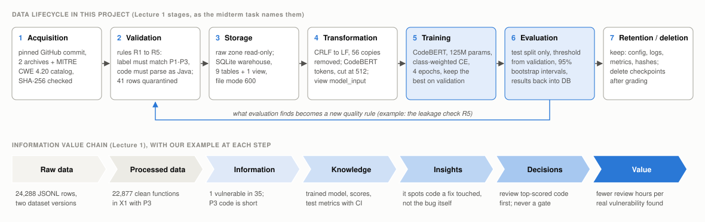
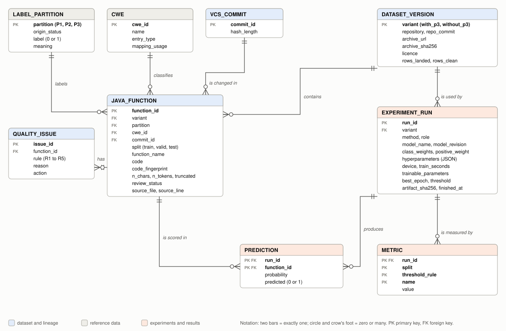
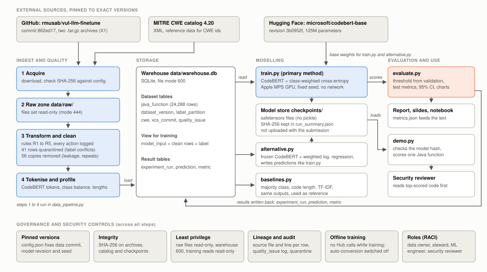
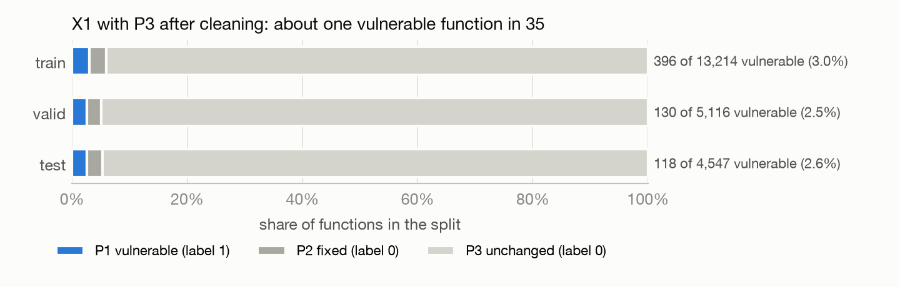
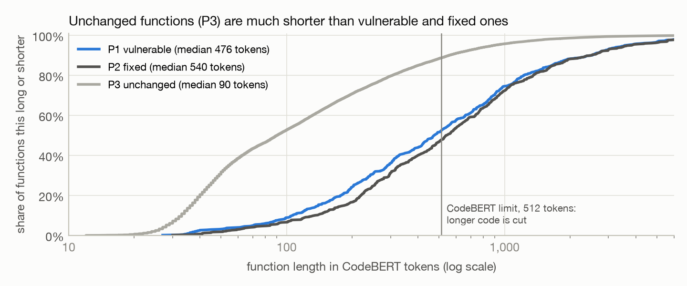
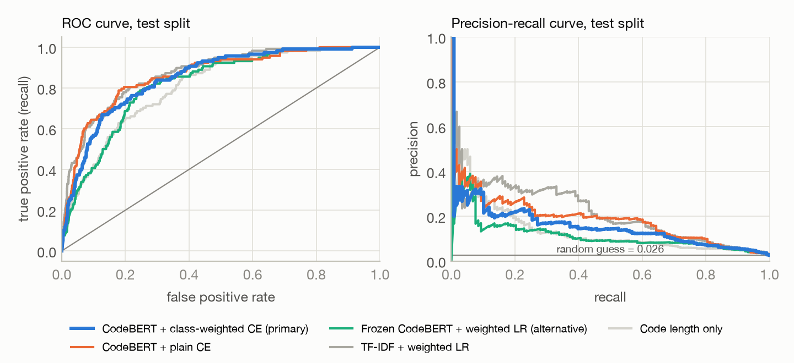
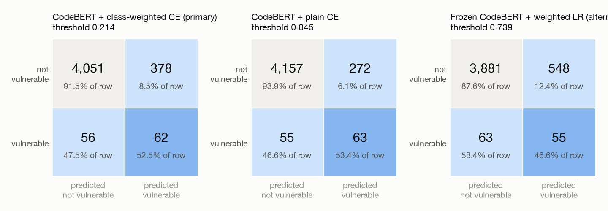
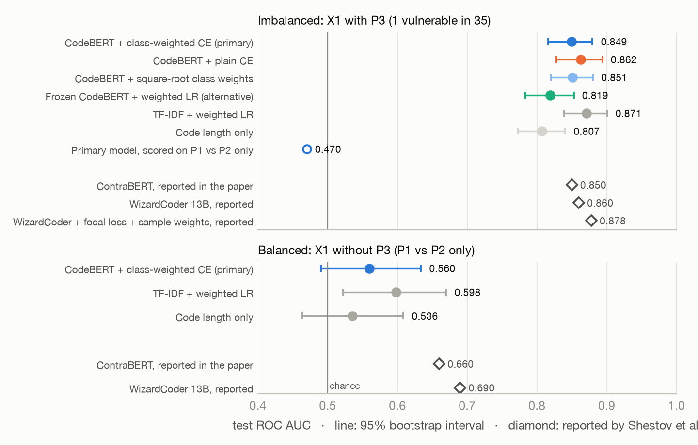
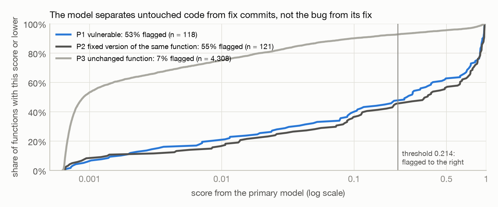
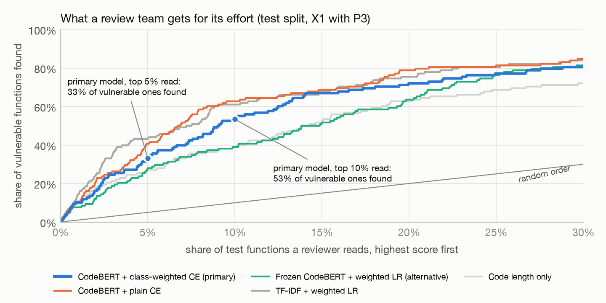

rmusab/vul-llm-finetune, commit 862ed17data_pipeline.py, train.py, alternative.py, baselines.py, evaluate.py, demo.py, midterm_project.ipynb, config.json, requirements.txt, README.md
The Group 9 topic is to detect vulnerable Java functions with CodeBERT and a class-weighted cross-entropy loss, as a partial reproduction of the study by Shestov et al. (2025). I did the whole project on my own. The task also asks to manage the data through its whole lifecycle and to show how governance, quality, integration, security and analytics affect the model. The report follows that order: one section for each lecture, then the model, the results, and what an organization should do with them.
The task table gives "CodeBERT + Class-Weighted Loss /" as the alternative method for Group 9, and the part after the slash is empty. I read it as the light version of the same idea: CodeBERT is frozen and only turns each function into a vector, and a small classifier is trained on these vectors with the same class weights. The primary method ran on my laptop without problems, so I did not have to switch. I ran the alternative anyway, because the project objective asks to compare the two on quality, cost and risk.
My research question comes from the paper. The authors write that plain class weighting did not work for their large model, so they moved on to focal loss and sample weights. I test whether class weighting helps CodeBERT, a model of the same family as ContraBERT, the smaller model the paper compares against, and what the answer means for an organization that wants to use such a model.
What I built:

Table 1. Each stage mapped to its DAMA-DMBOK knowledge area and to a standard or framework from Lecture 1.
| Stage | DAMA-DMBOK knowledge area | Standard or framework | What it means in my project |
|---|---|---|---|
| Acquisition | Data Integration and Interoperability; Metadata Management | ISO 8000 (provenance); ISO/IEC 27001 (supplier integrity) | source commit, URL and SHA-256 recorded for every file I take in |
| Validation | Data Quality | ISO 8000; ISO/IEC 25012 quality model | rules R1 to R5, each with a fixed action; quarantine instead of guessing |
| Storage | Data Storage and Operations; Data Security | ISO/IEC 27001 | read-only raw zone, one warehouse file that only its owner can open |
| Transformation | Data Modeling and Design; Reference and Master Data | ISO/IEC 11179 (metadata) | the label comes from one reference table; CWE ids are checked against MITRE |
| Training | Data Science (the DMBOK chapter on big data and data science) | NIST AI RMF; ISO/IEC 42001 | one configuration file, fixed seed, pinned model revision, a summary for every run |
| Evaluation | Data Warehousing and Business Intelligence | NIST AI RMF ("measure") | metrics with confidence intervals, results stored next to the data they describe |
| Retention and deletion | Data Governance; Document and Content Management | ISO/IEC 38505 (governance of data) | a written rule for what I keep, what I delete and why |
Figure 1 shows the lifecycle. Two choices shape the rest of the project.
First, every input is pinned. The dataset comes from one commit of the authors' GitHub repository, the CWE catalog is version 4.20, and CodeBERT is one exact revision on Hugging Face. Each archive is checked against its SHA-256 on every run. If the authors change a file, the pipeline stops instead of quietly training on different data.
Second, the lifecycle is a loop. Problems found during evaluation become quality rules. In Lab 4 a model was tested on code it had already seen in training. That is why rule R5 now removes copies of training functions from the validation and test splits before any model runs.
Retention follows from pinning. The archives can be downloaded again from the pinned commit, so I keep their hashes for good and the files only while I work. Checkpoints take about 500 MB each. After grading I keep the primary one for the demo and delete the rest. Logs, configuration, metrics and hashes are small and stay.
The information value chain from Lecture 1 goes from raw data to processed data, information, knowledge, insights, decisions and value. The bottom row of Figure 1 gives my example for each step. A score has no value by itself. It has value when it changes a decision, here the order in which a security team reviews code. This is why section 9 measures how many real vulnerabilities a team finds for a given amount of review work, and not only accuracy.
I do not own the source data. Its owners are the people who published it. I am the custodian of my copy and the owner of what I build from it.
| Data asset | Owner | My role | Licence and access |
|---|---|---|---|
| X1 archives, with and without P3 | dataset authors (GitHub rmusab) | data steward keeps the pinned copy | no licence file at the pinned commit (I checked the repository), so I use it for study only and do not redistribute the code |
| MITRE CWE catalog 4.20 | MITRE | reference data, read only | public; MITRE allows reuse if its copyright notice is kept |
| CodeBERT base model | Microsoft | ML engineer loads the pinned revision | MIT licence on Microsoft's CodeBERT GitHub repository; the Hugging Face page names no licence |
| Warehouse, clean data, quality log | me (the student) | data steward | only me |
| Fine-tuned models and predictions | me (the student) | ML engineer | me and the lecturer; weights are not uploaded |
I used the RACI format and the five roles from Lecture 2. In a company these are different people. In this project I did all five jobs myself, so the table shows how the work would be shared in a real team.
| Task | Data owner | Data steward | Data / ML engineer | Compliance | Security |
|---|---|---|---|---|---|
| Approve the use of the dataset and the model (purpose, licence) | A | C | I | R | C |
| Pin sources and check their SHA-256 | I | A | R | I | C |
| Run the quality rules and review quarantined labels | C | A | R | I | C |
| Train and evaluate models, keep a summary of every run | I | C | A/R | I | C |
| Set the threshold and approve use in code review | A | I | C | I | R |
| Check personal data and legal exposure (commit authors, data location) | I | C | I | A | R |
| Keep and delete checkpoints and data copies | A | R | C | C | I |
R = responsible (does it), A = accountable (owns the result), C = consulted, I = informed.
Figure 2, on the first landscape page after section 5, is the conceptual model. I built the warehouse straight from it: every entity is a table with the same keys, and SQLite enforces the foreign keys. The model has two parts, the data (blue) and the experiments (orange), and they meet only in prediction.
target and status, but the status already decides the label: P1 (vulnerable) means 1, P2 (fixed) and P3 (unchanged) mean 0. Keeping both in the function table is a transitive dependency. It breaks third normal form and lets the two disagree. So the label lives in label_partition, and the view model_input joins it back for training.source_file and source_line point to the exact line in the original JSONL file, and every change made to a row is in quality_issue.Figure 3, on the second landscape page after this section, shows the whole system. Data moves from left to right, and evaluation writes its results back into the warehouse.
Extract. data_pipeline.py downloads the two archives and the CWE catalog, checks the SHA-256 of each file, unpacks the archives and makes the raw files read-only. It reads the six JSONL files into one table and adds the source file and line to every row: {{D_ROWS_TOTAL}} rows.
Transform. The cleaning rules are in section 6. The pipeline also counts CodeBERT tokens for every function, so I know before training how much code the 512-token limit cuts off.
Load. The pipeline rebuilds the warehouse from scratch on every run. A full reload takes a few seconds and is simpler than an incremental load, because the source is a fixed snapshot.
{{T_WAREHOUSE}}

Integration with the model. The models do not read files. train.py gets its data with one SQL query on the view model_input, which only returns clean rows. A quarantined or duplicate row cannot reach training by mistake. After training, evaluate.py writes every run, every prediction and every metric back into the warehouse. The table of recall by CWE in section 9 is a SQL join of predictions, functions and the MITRE catalog.
At first sight the data is clean: no missing values, every label is valid, every function parses as Java. The real problems are about meaning, not format. Table 3 lists my rules. I never change a label and never guess one. A row with a doubtful label goes to quarantine with its reason and stays in the warehouse for an expert.
{{T_RULES}}Three results matter. {{D_CONFLICT_FUNCS}} functions have the label "vulnerable" in one version of the dataset and "not vulnerable" in the other, and 3 more rows have identical code with both labels. {{D_LEAK_ROWS}} rows in validation or test were copies of a function already in an earlier split, so a model would have been tested on code it had seen; I removed the later copy. And 659 functions had Windows line endings, which I changed to the usual Unix ones.
{{T_QUALITY}}
After cleaning, X1 with P3 has {{D_POS_WITH}} vulnerable functions out of {{D_CLEAN_WITH}}, about one in {{D_ONE_IN}}. The test split has only {{D_TEST_POS}} of them. This has two consequences. A model that always says "not vulnerable" is right {{R_MAJORITY_ACC}} of the time on the test split. And every recall or F1 on the test split rests on about a hundred cases, so I give confidence intervals. The balanced version (X1 without P3) has {{D_CLEAN_WITHOUT}} functions, about half of them vulnerable.

Vulnerable and fixed functions are long. Their median lengths are {{D_MED_P1}} and {{D_MED_P2}} tokens, and about half of them are longer than CodeBERT's limit of 512 tokens, so their end is cut off. The unchanged P3 functions have a median of only {{D_MED_P3}} tokens. This matters in two ways. The model may never see the line with the bug. And length alone separates P3 from P1 quite well, so a model can score high by learning that long code is risky. The length-only model in section 9 measures how far that gets.
The dataset is public, but the project still has assets to protect. In a company, the same pipeline would run on the company's own code, and its output would be a list of the places where that code is weak.
| Asset | Level | Why |
|---|---|---|
| Pinned archives, CWE catalog | Public | published by their owners |
| Warehouse, clean data, quality log | Internal | a copy of public code, but with my labels and decisions, and no licence to share the code |
| Configuration, logs, metrics, report | Internal | shared with the lecturer |
| Fine-tuned weights | Internal (Confidential in a company) | weights trained on private code can leak parts of that code |
| Predictions on a company's own code | Restricted | a ranked list of likely vulnerable functions is a map for an attacker |
| Control | How | Where to see it |
|---|---|---|
| Integrity of inputs | SHA-256 of both archives and the CWE catalog is checked on every run; a mismatch stops the pipeline | config.json, data_pipeline.download |
| Read-only raw zone | raw files are set to mode 444 right after download | notebook, section 6 |
| Least privilege | the warehouse file has mode 600; training, the alternative and the demo open it read-only | notebook, section 6: a DELETE on the read-only connection is refused |
| Safe model loading | CodeBERT is published as a pickle .bin file. transformers loads it with weights_only=True and refuses torch older than 2.6 because of CVE-2025-32434. I use torch 2.14.1 and a pinned revision | requirements.txt, config.json |
| My own models | saved as safetensors, which cannot hold code; the SHA-256 goes into run_summary.json, and demo.py refuses a file whose hash differs | demo.py, notebook section 6 |
| No hidden network calls | see the finding below | common.py |
| No secrets in code | no tokens or passwords in code or configuration; no Hugging Face token is needed | all files |
transformers source: when it loads a .bin checkpoint, it starts a background thread that asks the Hub for a safetensors copy and can ask Hugging Face's conversion service to make one. For a company that trains on private code, a library that contacts an outside service on its own is a real risk. I switched it off (DISABLE_SAFETENSORS_CONVERSION=1), turned off telemetry and load models from the local cache only. After the change the warning was gone. I did not check the traffic with a network monitor.| Risk | What happens | Likelihood / impact | Control |
|---|---|---|---|
| The dataset changes upstream | a different model, and nobody notices | medium / high | pinned commit and SHA-256 |
| Wrong or poisoned labels | the model learns the wrong thing | medium / medium | quarantine, audit log, labels never edited by hand |
| A malicious model file | code runs on my machine when the model loads | low / high | pinned revision, weights_only, safetensors for my own files |
| A library contacts outside services | code or metadata leaves the machine | medium / high for private code | conversion and telemetry off, cache only |
| The prediction list leaks | attackers learn where the weak spots are | low / high | Restricted level, security team only |
| People trust the model too much | missed vulnerabilities reach production | high / high | triage aid only; recall reported next to accuracy |
| Results are used against developers | unfair blame, misuse of personal data | low / medium | usage policy rule 4, no author lookups |
CodeBERT (Feng et al., 2020) is a RoBERTa encoder with 125 million parameters, pretrained on source code and its documentation. I put the standard classification head on top (a small two-layer network on the first token) and fine-tune all weights.
Plain cross-entropy treats every function the same. With one vulnerable function in {{D_ONE_IN}}, a model can keep the loss low by mostly saying "not vulnerable". Class-weighted cross-entropy multiplies the loss of each example by the weight of its class:
L = − Σi wyi log p(yi | xi) / Σi wyi, wc = N / (2 Nc)
N is the number of training functions and Nc the number in class c. The training split has {{D_TRAIN_N}} functions, {{D_TRAIN_POS}} of them vulnerable, so the weights are {{W0}} for "not vulnerable" and {{W1}} for "vulnerable". One vulnerable function counts as much as {{W_RATIO}} others. The milder ablation uses the square root of these weights ({{W0S}} and {{W1S}}).
I follow the protocol of the paper (appendix B): train for a fixed number of epochs, keep the checkpoint with the best ROC AUC on the validation split, choose the threshold that gives the best F1 on the validation split, and only then score the test split, once. The test split plays no part in any choice.
{{T_CONFIG}}Alternative. CodeBERT is frozen. One pass over the data turns every function into a 768-number vector (the mean of CodeBERT's last layer over all tokens). A logistic regression with the same balanced class weights is trained on these vectors; its strength C is chosen on the validation split. Only {{ALT_PARAMS}} numbers are trained instead of {{PRIMARY_PARAMS}}.
Reference models. Three simple models show what the numbers mean. "Always not vulnerable" shows what accuracy is worth on this data. "Code length only" is a logistic regression on the length of the function and nothing else. "TF-IDF" is the class-weighted logistic regression on code tokens from Lab 4.
{{T_RUNS}} {{TRAINING_CURVES}}Table 7 shows every model on the test split of X1 with P3. The primary model reaches a ROC AUC of {{R_P_ROC}} (95% interval {{R_P_ROC_CI}}) and an F1 of {{R_P_F1}}. The paper reports 0.85 and 0.22 for ContraBERT, the CodeBERT-style model it compares against, so my partial reproduction lands on the same numbers.
{{T_METRICS}}The surprise is the simple models. TF-IDF with a logistic regression, the Lab 4 baseline, reaches a ROC AUC of {{R_TF_ROC}}, and its F1 ({{R_TF_F1}}) and PR AUC are clearly better than CodeBERT's (Table 9). A model that sees nothing but the length of the code reaches {{R_LEN_ROC}}. On this benchmark, a transformer with 125 million parameters does not beat a bag of words. Section 9.4 shows why.


The task asks for an accuracy of at least 93%. On this data the target says little, because the model that never flags anything reaches {{R_MAJORITY_ACC}}. What a real model reaches depends on its threshold, so Table 8 gives three operating points, each fixed before the test split was scored.
{{T_THRESHOLD}}With the paper's rule (best F1 on validation) the model flags {{R_P_FLAG}} of the {{D_TEST_N}} test functions, and its accuracy is {{R_P_ACC}}, below the target. When I pick the threshold that gives 93% on validation instead, test accuracy is still only {{R_P_ACC_TARGET}}. The reason is a shift between the splits: at the same threshold the model flags {{R_VALID_FLAG}} of the validation functions but {{R_TEST_FLAG}} of the test functions, because the test commits come from other code. At the default threshold 0.5 the model flags {{R_P_FLAG05}} functions and reaches {{R_P_ACC05}}, so the target is met, but recall drops from {{R_P_REC}} to {{R_P_REC05}}.
This was my research question, and the answer is no. Table 9 compares the two runs on the same 2,000 resamples of the test split. The model trained without weights ranks the functions at least as well: its ROC AUC is {{R_PL_ROC}} against {{R_P_ROC}}, and its PR AUC {{R_PL_PR}} against {{R_P_PR}}. Neither difference is clear, because both intervals include zero. Its F1 at the tuned threshold is clearly higher ({{R_PL_F1}} against {{R_P_F1}}), and it finds more vulnerable functions at every review budget (Table 10). It was also better on validation after every epoch (Figure 6).
What the weights do is move the scores. Without weights the model gives low scores to almost everything: at the default threshold 0.5 it flags only {{R_PL_FLAG05}} test functions. With weights it flags {{R_P_FLAG05}}. The paper's protocol picks the threshold on validation anyway, so this shift buys nothing; the plain model simply gets a lower threshold ({{R_PL_THR}} against {{R_P_THR}}). The weights also make the probabilities less honest: the plain model's validation log loss stays near 0.10, while the weighted one rises to 0.22 after the third epoch. The milder square-root weights ({{W0S}} and {{W1S}}) change nothing here: test ROC AUC {{R_SQ_ROC}} and F1 {{R_SQ_F1}}, with no clear difference from the full weights (Table 9). More weight never helped, and no weight did best.


Figure 10 splits the test functions by partition. At its threshold the model flags {{R_FLAG_P1}} of the vulnerable functions and {{R_FLAG_P2}} of their fixed versions, but only {{R_FLAG_P3}} of the unchanged functions. On vulnerable functions against their own fixed versions its ROC AUC is {{R_P_P1P2}}, which is chance. TF-IDF and the length model are at chance there too (last column of Table 7).
So the model has learned to tell code that a fix commit touched from code that no fix touched. It has not learned what makes code vulnerable. This fits what section 6 found: unchanged functions are short, and a vulnerable function and its fix differ in a few tokens, often after the 512-token cut. Most of the high ROC AUC on X1 with P3 comes from the easy P3 negatives. The paper shows the same from the other side: on the balanced dataset, where every negative is a fixed function, its best model reaches only 0.69.

A model like this is useful as a way to order work. If a team reads the top 5% of test functions by score ({{R_BUDGET_5_N}} functions), it finds {{R_BUDGET_5}} of the vulnerable ones. Reading 10% finds {{R_BUDGET_10}}, and reading 20% finds {{R_BUDGET_20}}. In random order the team would find 5%, 10% and 20%. TF-IDF does a little better at every budget (Table 10).
{{T_BUDGET}}Table 11 comes straight from the warehouse: one SQL query joins predictions, functions and the MITRE catalog. Each CWE has only a handful of test cases, so the table is a hint, not a result. The model finds about half of the injection-type weaknesses (cross-site scripting, XML external entities, path traversal) but almost none of the access-control ones: {{R_CWE264}} of the CWE-264 cases and {{R_CWE352}} of the CSRF cases. Those depend on configuration and on code outside a single function.
{{T_CWE}}On the balanced dataset every negative is the fixed version of a vulnerable function, so there are no easy cases. The same method reaches a test ROC AUC of {{R_BAL_ROC}} here (95% interval {{R_BAL_CI}}). The interval includes 0.5, so I cannot say the model does better than chance. The paper reports 0.66 for ContraBERT and 0.69 for WizardCoder, and I did not reach their number. Likely reasons: ContraBERT is a stronger relative of CodeBERT, the paper tuned its settings on this dataset while I used standard ones, and the training split has only {{D_BAL_TRAIN}} functions. TF-IDF reaches {{R_BAL_TF}}, also close to chance. The F1 of {{R_BAL_F1}} in Table 12 looks good but means little: the best-F1 threshold flags almost every function, and flagging all of them already gives an F1 of {{R_BAL_F1_ALL}} on this split.
This is section 9.4 again from another side. Telling a vulnerable function from its own fix is the real task, and none of my models can do it.
{{T_BALANCED}}The alternative freezes CodeBERT and trains only {{ALT_PARAMS}} numbers. It took {{R_ALT_MIN}} minutes in total, almost all of it one pass of CodeBERT over the data, against {{R_P_MIN}} minutes for the primary method. It is clearly worse: ROC AUC {{R_ALT_ROC}} against {{R_P_ROC}} and F1 {{R_ALT_F1}} against {{R_P_F1}}, both clear differences in Table 9. At a 10% review budget it finds {{R_ALT_BUDGET_10}} of the vulnerable functions, no more than the length-only model. The frozen vectors hold little that a linear model can use for this task; the fine-tuning is where the primary method gets its edge.
{{T_COST}}For an organization the choice depends on what it can run and explain. With a GPU, fine-tuning takes about an hour and gives a model that orders the review queue well. Without one, TF-IDF gives the same ranking quality in {{R_TF_SEC}} seconds on a normal CPU, and its decisions are easier to explain, because each word has a weight. The frozen alternative is the weakest choice: it still needs CodeBERT and a GPU for the vectors, and it ranks no better than code length.
These follow from the numbers above and are written for a team that wants to use such a model on its own Java code.
python3.12 -m venv ~/venvs/mood-midterm && ~/venvs/mood-midterm/bin/pip install -r requirements.txt
PY=~/venvs/mood-midterm/bin/python
$PY data_pipeline.py # download, check, clean, load (under a minute)
$PY train.py --run codebert_weighted # primary method (about {{T_PRIMARY_MIN}} min on an M3 Pro)
$PY train.py --run codebert_plain # same without class weights; also codebert_sqrt,
$PY train.py --run codebert_weighted_balanced_set # codebert_weighted_balanced_set
$PY alternative.py && $PY baselines.py && $PY evaluate.py
$PY demo.py --sample 2 # live demo
The notebook midterm_project.ipynb imports the same files and is already executed. The data steps, the baselines, the evaluation and the demo run inside it. Training takes about three hours in total, so the notebook reads the saved training runs from runs/ unless RUN_TRAINING is switched on. Every table and chart in this report comes from out/, which that run produced.
torch.load with weights_only=True before PyTorch 2.6.0.